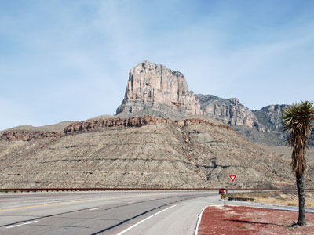
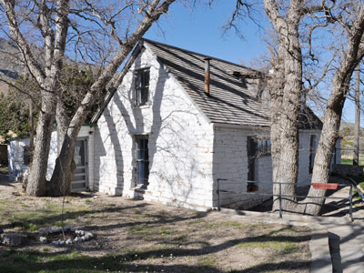
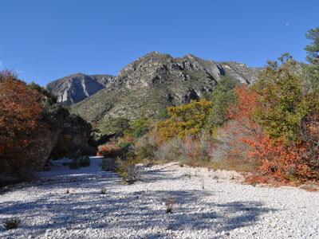
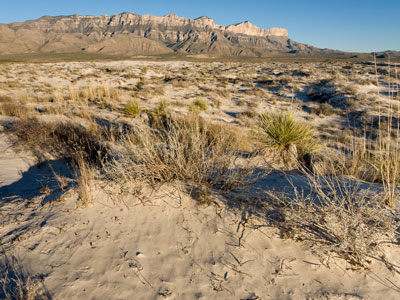
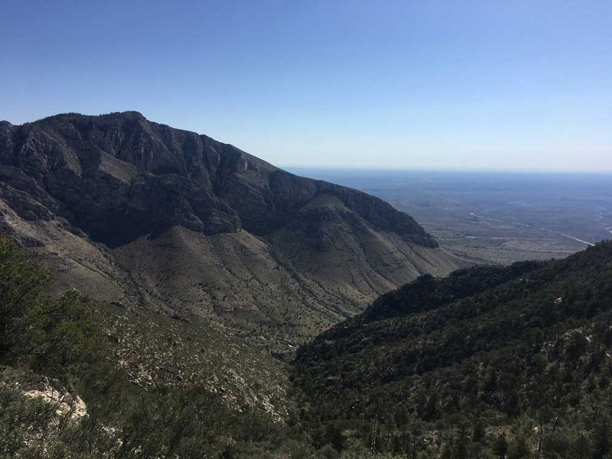
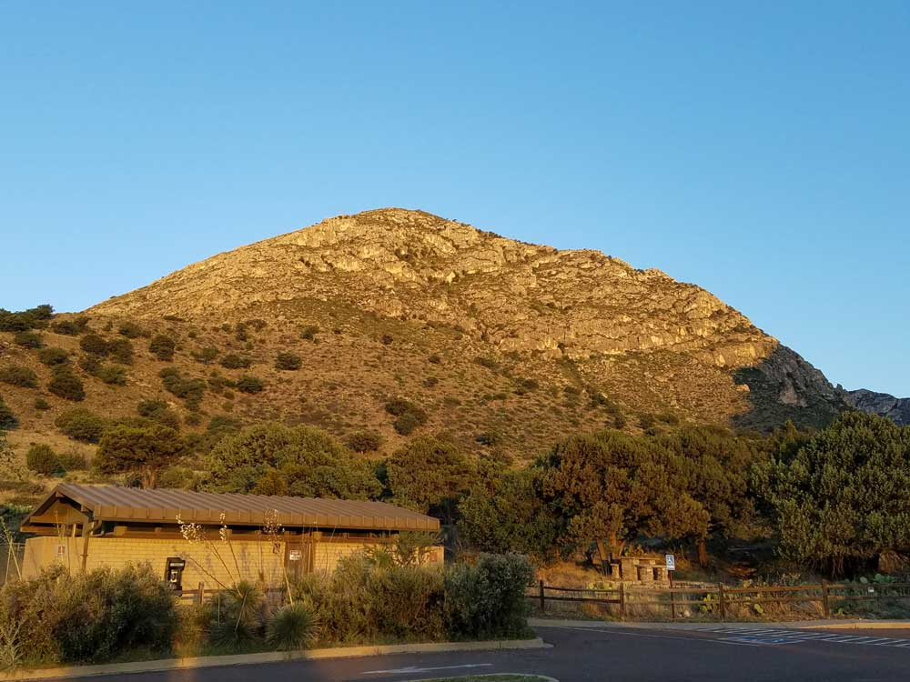
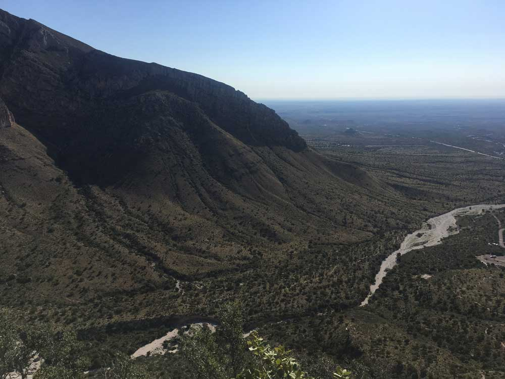

National park in the Guadalupe Mountains, east of El Paso, and includes Guadalupe Peak, the highest point in Texas, and El Capitan used as a landmark by travelers on the route later followed by stagecoach line
General Information
Accepts America The Beautiful Pass
From El Paso (114mi) Get on I-10 E. Take US-180 E/US-62 E to Piney Spring Visitors Center in Culberson County. Continue on Piney Spring Visitors Center
Overview
Guadalupe Mountains National Park protects a remote, rugged stretch of the Guadalupe Mountains in far West Texas, about 110 miles by road east of El Paso. The park is home to Guadalupe Peak, the highest point in Texas at 8,751 feet, and El Capitan, a sheer cliff that has long been a landmark for travelers. The mountains were built from an ancient fossil reef shared with nearby Carlsbad Caverns National Park in New Mexico, and they rise more than 3,000 feet above the Chihuahuan Desert, creating a sky island of canyons, forests, and desert.
The park was established in 1966, after Wallace Pratt, a petroleum geologist, donated land in McKittrick Canyon. It protects some of the best examples of a fossil reef in the world, a desert ecosystem, and hiking trails to the "Top of Texas." The park is known for solitude, rugged hiking, and fall color. Visitors come to climb Guadalupe Peak, walk in McKittrick Canyon, watch the sky, and enjoy a park that is much quieter than its famous neighbor, Carlsbad Caverns.
Park Sections
The park has several distinct areas, which are far apart. Pine Springs, on US-62/180, has the main visitor center, a campground, and trailheads for Guadalupe Peak and the Bowl. Frijole Ranch, a few miles north, has a history museum and the trailhead for Smith Spring. McKittrick Canyon, a day-use area known for fall color, leads to the Pratt Cabin. Dog Canyon, on the north side, is reached from New Mexico by a long road. The Salt Basin Dunes on the west side are reached by a separate dirt road.
Sightseeing and Exploring the Park
The park has no scenic road, but US-62/180 passes along the base of the mountains, with views of El Capitan. The El Capitan overlook on the highway is a good place to stop and take photos. A short drive leads to McKittrick Canyon, where a paved road ends at a visitor center and trailhead. Frijole Ranch and the springs nearby have historic buildings and shade. Salt Basin Dunes are reached by a gravel road and a short walk to white gypsum dunes. Most visitors see the park by hiking, since few roads reach its attractions.
Hiking
Hiking is the main activity, with about 80 miles of trails. The Guadalupe Peak Trail, 8.4 miles round trip with a climb of 3,000 feet, is the most popular strenuous hike, taking most of a day. McKittrick Canyon's trail to the Pratt Cabin (about 4.8 miles round trip) is easy to moderate, and a longer trail continues to the Grotto and Hunter Lodge. The Devil's Hall Trail (4.2 miles round trip) follows a rocky canyon. The Smith Spring Trail (2.3 miles) from Frijole Ranch leads to a small oasis, and the Bowl trail loops into a high forest. Water is scarce, so carry plenty. Winds can be strong.
Other Activities
Backpacking, horseback riding on designated trails, birdwatching, and stargazing are other activities. The park offers ranger programs, a Junior Ranger program, and a living-history program at Frijole Ranch. Fall color in McKittrick Canyon, from late October to mid-November, draws many visitors. There are no cave tours in the park, but Carlsbad Caverns National Park, about 35 miles away, is a short drive and includes the Big Room and bat flights. There are no commercial outfitters or boat tours.
Flora and Wildlife
The park has desert plants such as agave, yucca, ocotillo, and lechuguilla at lower elevations, and, in the higher canyons, Douglas fir, ponderosa pine, and Southwest white pine. McKittrick Canyon is famous for its bigtooth maples, which turn red and orange in fall, and its creek. Wildlife includes elk, mule deer, mountain lions, black bears, gray foxes, javelinas, and rattlesnakes, as well as birds such as golden eagles, peregrine falcons, and the Colima warbler. Wildlife is hard to see in the daytime. Viewing is on your own, and elk are sometimes seen near the high meadows.
Access
The park is in far West Texas near the New Mexico border, reached by US-62/180. Pine Springs, the main entrance, is about 55 miles southwest of Carlsbad, New Mexico (roughly an hour), and about 110 miles east of El Paso (around 1.75 hours). Van Horn, Texas, is about 65 miles south. The closest airports are El Paso International and Cavern City Air Terminal in Carlsbad. There is no public transportation, and services are very limited, so bring food, water, and fuel. Dog Canyon is reached from Carlsbad by about 70 miles of roads.
Seasons
Fall is the most popular season, especially for the maple color in McKittrick Canyon. Spring is windy but has wildflowers and mild temperatures, and summer is hot at lower elevations, with afternoon thunderstorms in the mountains. Winter brings cold, wind, and occasional snow at higher elevations, and it can be a quiet time to visit. McKittrick Canyon is open for day use only, and its gate closes at certain hours, which change by season. High winds can make the Guadalupe Peak climb difficult in spring. Check the National Park Service website for conditions.
Camping and Lodging
Pine Springs Campground has about 20 tent sites, two group sites, and RV sites, and Dog Canyon Campground on the north side has similar facilities. Backcountry camping requires a permit. There is no lodging in the park. The closest lodging is in Carlsbad, New Mexico, about 55 miles northeast, which has chain hotels and motels, and in Whites City near Carlsbad Caverns. Van Horn, Texas, about 65 miles southwest, has several motels, and El Paso, about 110 miles away, offers a wide choice of hotels.
Visitor Centers
The Pine Springs Visitor Center is the park's main visitor center, with exhibits, a film, a bookstore, and rangers who can advise on conditions and permits. The McKittrick Canyon Visitor Center is a small facility open seasonally. The Frijole Ranch History Museum shows how ranchers lived here, and Dog Canyon has a ranger station. Hours vary by season, so check the National Park Service website.
This article uses material from the Wikipedia article "Guadalupe Mountains National Park", which is released under the Creative Commons Attribution-Share-Alike License 3.0. Additional information comes from the National Park Service Guadalupe Mountains National Park website.
Featured Locations and Trails
-400.jpg)
Jeff P from Berkeley, CA, USA, CC BY 2.0, via Wikimedia Commons; Image Size Adjusted
.jpg){kind=link}
Remote mountain canyon offering secluded camping, scenic hiking trails, diverse wildlife habitats, and access to some of the most rugged landscapes in the park.

Jeff P from Berkeley, CA, USA, CC BY 2.0, via Wikimedia Commons; Image Size Adjusted
Massive limestone peak rising prominently above the desert landscape, renowned for its sheer cliffs, rugged beauty, and status as an iconic mountain landmark.

Jeff P from Berkeley, CA, USA, CC BY 2.0, via Wikimedia Commons; Image Size Adjusted
Historic ranch complex featuring preserved adobe buildings, spring-fed agricultural areas, and cultural exhibits that illustrate pioneer life in a desert mountain environment.
Fredlyfish4, CC BY-SA 3.0, via Wikimedia Commons; Image Size Adjusted

Remote mountain trail climbing through high-elevation forests and rugged backcountry terrain to a secluded basin surrounded by some of the tallest peaks in Texas.
Mountain range located in West Texas and southeastern New Mexico, includes the highest summit in Texas, Guadalupe Peak, at 8,751 ft (2,667 m)

Jeff P from Berkeley, CA, USA, CC BY 2.0, via Wikimedia Commons; Image Size Adjusted
Spectacular desert canyon featuring a seasonal stream, towering limestone cliffs, colorful woodland habitats, and some of the most celebrated hiking scenery in Texas.

Jeff P from Berkeley, CA, USA, CC BY 2.0, via Wikimedia Commons; Image Size Adjusted
Expansive gypsum sand dunes stretching across a desert basin, creating a striking landscape of brilliant white sands framed by rugged mountain peaks.


